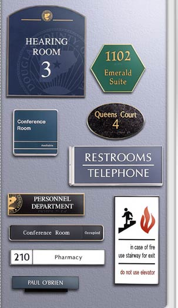

|
Specialty requirements
for room identification and control are accomplished
with these unique frames. They feature built-in
changeable messages, magnetic changeable signs
and frames with dividers. Frames can also be
made into unique desk bars as well as virtually
any custom shape.
ARCHITECTURAL ALUMINUM
FRAMES
Architectural sign frames are custom fabricated
from continuous aluminum extrusion from 1/16”
or 1/8” wall thickness to your custom
size requirements.
- They come in
square corners or four variations of radius
corners(3/8",1/2", 9/16", or 13/16").
- Frames can be
custom fabricated to virtually any specified
size or
shape.
- Frames can also
be fabricated to form simple and complex
directory and changeable message signs.
- Nine anodized
finishes: Polished Rose Gold, Polished Yellow
Gold, Polished Silver, Arch Bronze, JRS Bronze,
Matte Black, Satin Rose Gold, Satin Yellow Gold, and Satin Silver.
- Seven handsome
powder coat finishes: Medium Gray, Pewter
(light gray), Black, White, Almond, Brown,
and Arch Brown.
|

|